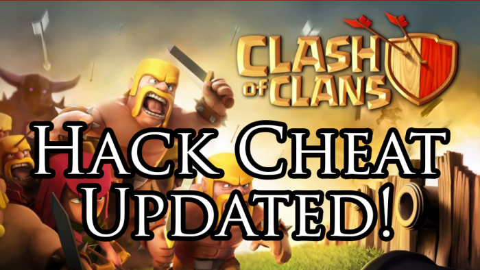
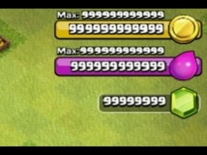
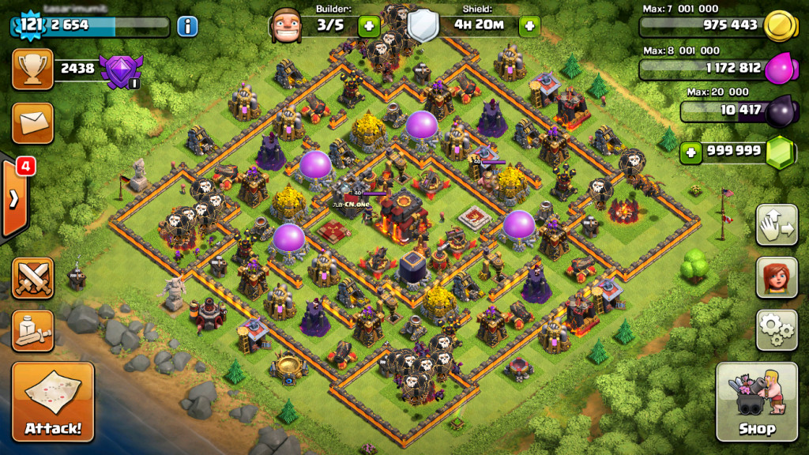
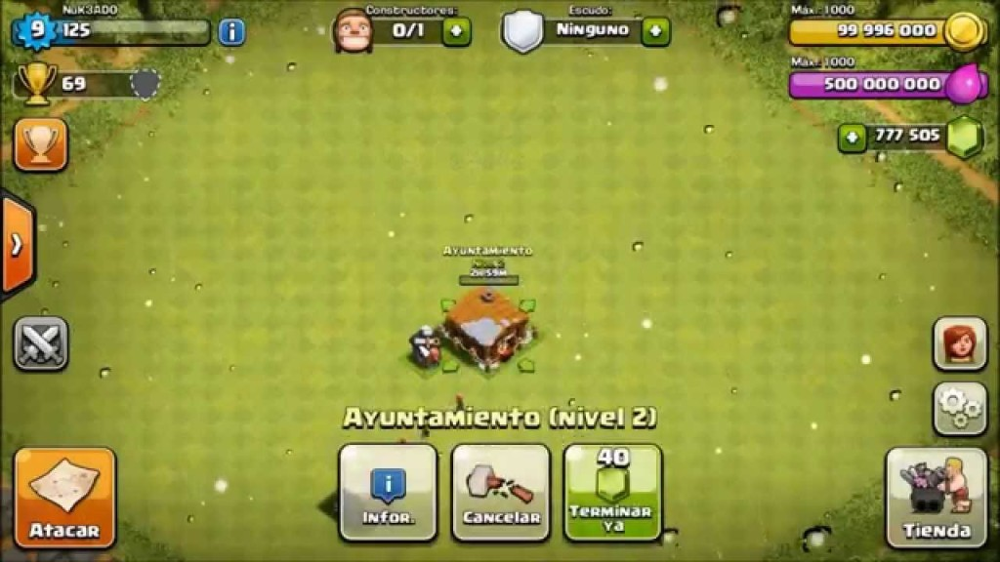

Sometimes life can be very tough on you and you can’t really get time to enjoy it. However, sometimes during work, on the bus, in the bathroom or in maybe somewhere else you think to yourself that you should do something. It really can get boring sometimes if you ask me and I know where you’re coming from. This is why you have game. Yes, I know consoles can be problematic but that’s not what I’m talking about. I’m talking about games that you can install on your smartphone to kill time. These are perhaps the same phones that you can get to make the most out of your day. Well, this is where we help you choose the one game that has got all of the world dancing to its tune. That’s right! We’re talking about Clash of Clans Hack.
Clash of clans is a small level flash game that is interactive and allows you to play with your friends and other people online. The interactive game was developed in 2013 and in 2 years of time it has everyone at its feet. The rules of the games are simple and straight forward. You are provided a clan and other clans will attack you from time to time. On the way you need to collect coins, trophies and other levels that can actually help you out. These things have some complications as you have to pay for many of them. This is where people don’t like the game and consider that the game isn’t letting them have any fun, well, you can get all the fun you want with the Clash of clans hack. There are many Clash of clans hack tools online that you can use to make sure you get the best. Let us elaborate on some of the best tools online.
Who we are?
Our website gets you a newer and better tool for your Clash of Clans hack. It provides you with a better hack that you can use on your smartphone. Root or jailbreak not required for this. There is no different gameplay just that you’ll be getting unlimited coins and gems for your clan. Enjoy the game lag free and make sure you get the hack tool at our website.

What is new in the Clash of Clans Hack Update?
We have started back in 2014 when Clash of Clans became one of the most adores game online and the purpose of it was the same. Our tools allows you to get the best Clash of clans hack and cheats that you need. Also our hack is working online and you can easily get it free of cost. So get it today.
Why it’s better to use our hack?

Similar to other hack tools, this probably one of the best tools that you can find online. All you have to do is make sure that you enter your username and pick how many gems you want to get. Easy to use website that allows you to get the coc resources of your choice.
How to use our coc hack tool?
This website was first made to appreciate the people’s choice and it soon changed into the Clash of Clans Hack website. www.Hack-Clash-of-Clans.com has all types of Clash of Clans hacks that you may need while playing the game. Without providing you the root or jailbreak on your phone. Just download the app or use the tool online and get yourself rolling. Here is one of the best Clash of Clans Hack online and available free of cost.
{kind=link}
{kind=link}
{kind=link}
{kind=link}
{kind=link}